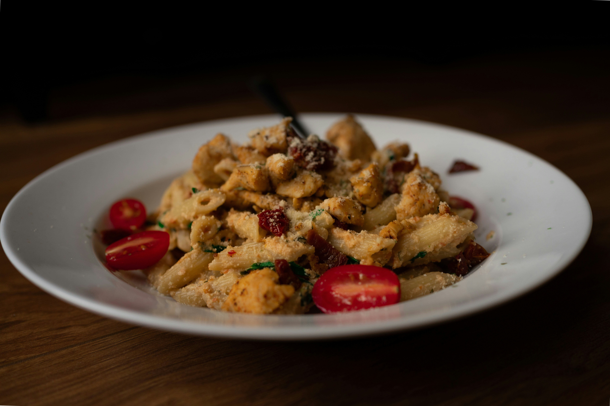

Home
Chicken Pesto Gnocchi

Description
This creamy chicken pesto gnocchi bake is loaded with tender chicken, broccoli, and fire-roasted
peppers in a garlic-infused pesto Alfredo. Best of all, the gnocchi cooks right in the dish for an easy,
comforting dinner with minimal cleanup.
Ingridients
- 12 ounces gnocchi
- 14 ounces skinless, boneless chicken, cut into 1/2-inch pieces
- 1 1/2 cups small broccoli florets
- 3/4 cup fire-roasted bell peppers, drained
- 1 (11 ounce) container refrigerated Alfredo sauce, such as Giovanni Rana®
- 2/3 cup chicken bone broth
- 3 tablespoons pesto/li>
- 3 cloves garlic, minced
- 1/2 teaspoon Italian seasoning
- 1/2 teaspoon salt
- 1/4 teaspoon ground black pepper
- 1 pinch red pepper flakes (optional)
- 1/3 cup grated Parmesan cheese
- 1 cup shredded mozzarella cheese
- 1/3 cup breadcrumbs
- 2 teaspoons olive oil
- 1 teaspoon lemon juice
- minced parsley or basil (optional)
Steps
- Preheat the oven to 375 degrees F (190 degrees C). Grease an 8x8-inch baking dish.
Add gnocchi, chicken, broccoli, and peppers to the dish.
- Combine Alfredo, chicken broth, pesto, garlic, Italian seasoning,
salt, pepper, red pepper flakes, and 2 tablespoons Parmesan in a bowl;
pour over baking dish and stir to coat all ingredients.
Sprinkle mozzarella and remaining Parmesan evenly over the top.
- Stir breadcrumbs and olive oil together and sprinkle over cheese. Cover
casserole dish tightly with foil.
- Bake covered in the preheated oven for 30 minutes. Uncover and bake until
bubbly and lightly golden, 10 to 15 more minutes. Rest casserole for 5 to 10
minutes, then add a squeeze of lemon juice and fresh parsley.